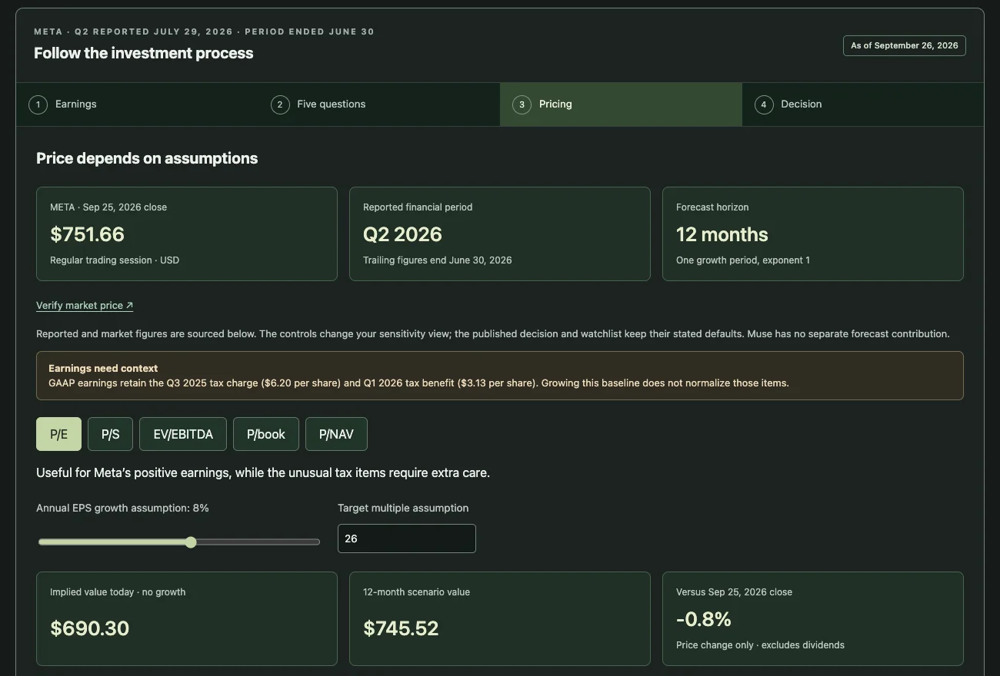

Make the reasoning inspectable
An investment assessment is only useful if its conclusions can be traced back to evidence. I built Equity Research as a local workspace for bringing earnings releases, transcripts, and filings into a research process that retains the sources, financial inputs, and assumptions behind each assessment.
A React and TypeScript interface connects to a Python/FastAPI service. SQLite stores the research ledger; a source archive retains document versions and hashes. The backend invokes an authenticated local Codex CLI for structured model output.
Separate judgment from calculation
For a verified earnings package, code prepares the evidence and financial context before a model produces an investment review. Numerical facts are tied to the issuer, reporting period, units, and cited passages, making the inputs available for inspection alongside the narrative.
Bear, base, and bull valuations are recalculated in code from explicit assumptions. Validation checks the generated assessment before it becomes the final report; missing or invalid targets receive one correction attempt, and unresolved failures remain visible. This keeps valuation arithmetic and publication checks outside the model's judgment.
Carry research forward
Company research persists across runs, so later assessments can reuse saved material while retaining earlier conclusions. An Obsidian-compatible Markdown vault exposes company notes, with SQLite remaining the authoritative record for citations and validation. A Three.js memory view provides another way to inspect the research connections.
The public demo is a separate static build with an authored example notebook. It lets visitors explore the workflow and adjust pricing assumptions. Fresh AI research runs in the local application; the public site does not include the local API, personal ledger, or private source archive.